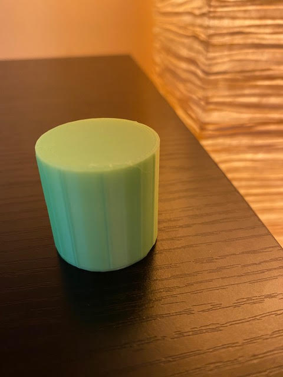

Courtenay's Assignment 3!
For this project, I set out to explore 3D printing. Another classmate and I bought an Ender 3 Pro 3D printer from Creality, which required about 3 hours of assembly time in total. We bumped into a couple of challenges during assembly, primarily due to not tightening a couple of screws quite enough at first and some trial and error with bed leveling. Below are a couple of pictures showing the assembly and bed leveling process:

As a next step, I watched a tutorial given by my professor, Nadya Peek, on how to prepare various Rhino models for export to STL format, slice them in Cura, and then feed the sliced files to the 3D printer. I took about one hour to install Cura (the slicer) and create all of the test models I would be 3D printing, which included the following: 4 cubes, 2 tubes, 4 cylinders, and a nested object. Below is a screen capture showing a 2 cm cube just before slicing it in Cura:

Rhino 7 file of 2 cm cube to be printed at low quality setting
STL file (exported from Rhino for slicing in Cura as a next step)
Although I completed assembly of the Ender Pro 3, I did all of my actual 3D print testing on two different printers at the university makerspace, a Prusa 3D printer and a Dremel. (I found the Prusa to be more intuitive). Starting with the Prusa, I loaded a bright green filament and then printed my first 2 cm cube in 13 minutes!

Here is a close-up of my first 3D printed cube measuring 2 cm, bright green in color, and printed at a low quality setting - it came out with nice and clean lines:

I continued testing on the rest of my 2 cm cubes, printing each one at a slightly higher quality setting. The picture below shows 4 bright green cubes in total, each one measuring 2 cm on all sides. From left to right, the cubes were printed at low, standard, and super quality. The cube on the far right was also printed on low quality and with a concentric top and bottom layer:
Here is a close-up of the 4th cube with the concentric top and bottom layer applied:
I ran into an issue when test printing my first tube. It measured 3 cm in diameter and 3 cm in height. However, it didn't print as a tube (i.e. open at both ends and hollow on the inside) but rather as a solid, like a closed cylinder!

The next day I went back to the makerspace and decided to try test printing on a different brand of 3D printer, a Dremel, which had different settings than the Cura software. I changed the filament color to orange, adjusted my software settings, and tried to reprint a tube with the addition of a few cylinders. My first attempt at 3D printing on the Dremel was a disaster! For one, it required using Dremel's proprietary slicer software, and I was unfamiliar with the settings. I printed the following shapes together in the same print job, and every one of them was a failure!
With a little troubleshooting support from a classmate, I discovered that I had inadvertently turned on a setting that only printed the infill of my shapes and not the exterior walls. I adjusted my Dremel software settings again and adjusted my print job to reprint only 1 open tube and 1 cylinder. Success at last! They printed beautifully!
via GIPHY